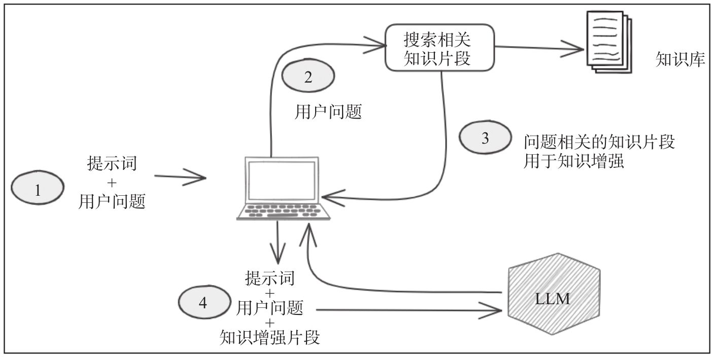

辅助编程应用
Posted by 付辉 on Sunday, December 29, 2024 共1659字status：草稿……
有下面的开源模型供参考：
- Salesforce AI Research发布的Codegen
- Llama Code
- Stability AI公司发布的Stable Code 3B模型，代码补齐模型
模型内部的渐进式生成方案：按照 max_new_token 设定的长度限制，先生成一小段内容，推送给客户端显示，然后将之前生成的全部内容作为参数，继续调用模型的generate方法生成接下来的内容。（这里存在概念上的歧义）
关于代码参考的素材，我们首先可以确定的是当前的文件，在当前文件内搜索与当前编辑内容最相关的内容，其次相关的内容包括：
- 文件的打开历史、或者说是工作区打开的tab页
- git提交记录中的变更文件
- import语法块中文件
关于训练模型，其实并不是一件简单的事情，要训练一个Coding模型，单靠学习代码并不足以微调模型一边有效地生成代码，模型还需要其它领域的知识。而所学内容的类型和比例，我们称之为数据配比，将直接决预训练模型的最终效果。
这让我想到模型的评测指标，评测一个模型在不同方面的打分
知识库RAG
Retrieval-Augmentd Generation 检索增强生成框架，该框架可以使模型访问超出其训练数据范围之外的信息，使模型在每次生成时可以利用检索提供的外部更专业、更准确的知识，从而更好的回答用户的问题。
RAG是LLM内容生成的补充和完善，LLM存在的问题列举：
- 知识更新问题，LLM通过海量的文本训练后，将这些文本以一种黑盒的方式压缩到模型自身的参数中。但这些预训练预料库内容都截止在固定的时间之前，在模型训练之后更新的知识无法囊括在大模型中。
- 训练成本问题。LLM训练硬件资源成本不需要在强调了，这里强调软件方面，对于一个大模型来说，更新基础知识库是非常困难的一件事。首先，要保证预训练数据的质量；其次，更新知识库后的模型都需要重新训练，至少需要将新数据和旧数据按照一定的比例进行混合训练，而不能仅仅使用新数据，否则会出现灾难性遗忘
- 生成结果的不可解释性问题
RAG在推理过程中分为两个阶段：检索和内容生成。
- 检索阶段，通过算法检索和用户问题相关的知识片段，这里的知识片段就可以是企业私有的仓库；
- 内容生成阶段。完成检索后，获取到了用户输入相关的可靠外部输入。在内容生成阶段，通过一个结构话的prompt模板约束，将这些外部知识添加到用户的问题中，并传递给语言模型。模型基于知识增强的prompt，通过自己的大量参数计算，就可以生成一个更准确的答案。

当前RAG操作私有的代码仓库，在数据检索阶段，我们可以搜索到最相近的K个候选集，需要有效地对这部分候选集进行过滤。另外，检索结果的相似性要符合逻辑因果上的关联性，具体到给某个函数自动生成单元测试，函数的内部实现、类依赖、调用场景，我们希望通过检索RAG来得到。
基于文档和知识库的RAG问答技术，可以考虑应用到私有代码仓库。结合大模型的深度思考分析理解能力以及语法树解析，创建一个针对代码库的RAG系统，通过自然语言和代码仓库进行交互，理解项目的架构和业务实现。
通过大模型可以高效地定位到具体的功能实现、可以清晰的梳理出当前方法引用到的结构体和其它依赖声明、可以给出当前实现和产品需求的差异点。
比如，我要为具体的方法生成单元测试，那我可以通过知识库来获取当前方法所有要使用的结构体声明、函数声明、方法声明，通过优化 prompt 的方法来优化自动生成代码的质量。
方向：为私有仓库创建RAG系统，通过大模型来获取函数的具体实现，主要是含义内部变量的类型、使用到的方法声明、使用到的函数声明。从这个角度进行考虑的话，更需要的是一个检索+大模型的系统。
钩子 hook
对于大模型的应用，我们可以重复利用两个时机来进行介入处理，其一是在真实发起调用大模型之前，其二是在拿到大模型的返回结果之后。之前看到过有 Function call，用来扩展AI的能力。
通过 Function Call，模型可以和外部系统进行交互集成，执行更加复杂的操作，比如提供额外的上下文、或者修复 prompt。但本质是调度，关键还在于 Call 什么，我希望可以 Call 到上面的知识库RAG
本文参考内容比较多，我尽量一一列举「大模型RAG实战：RAG原理、应用与系统构建」、